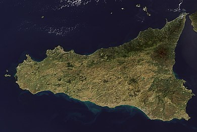

|

|
Sicilia
|
La Sicilia (AFI: /siˈʧilja/[12]; Sicilia in siciliano[13], Səcəlia
in galloitalico di Sicilia, Σικελία in neogreco), ufficialmente
denominata Regione Siciliana[14], è una regione italiana a statuto
speciale di 4 783 439 abitanti[4], con capoluogo Palermo.
|
|